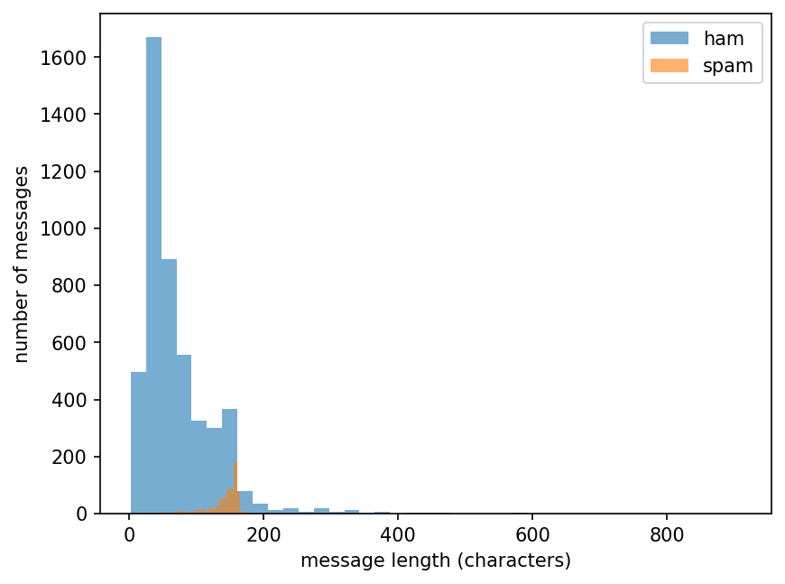
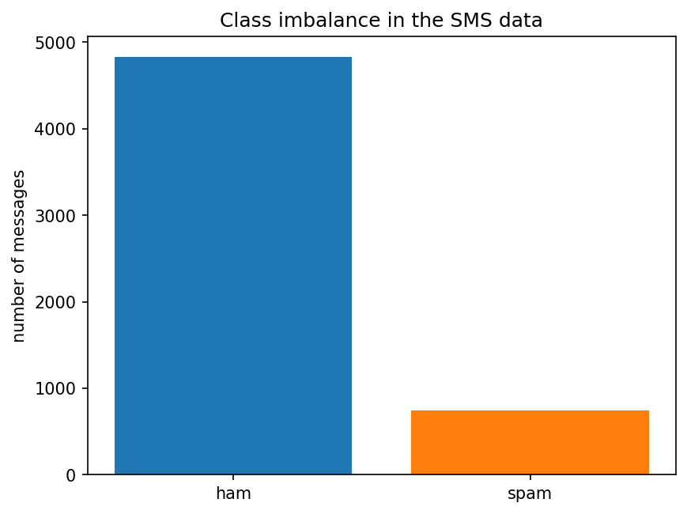
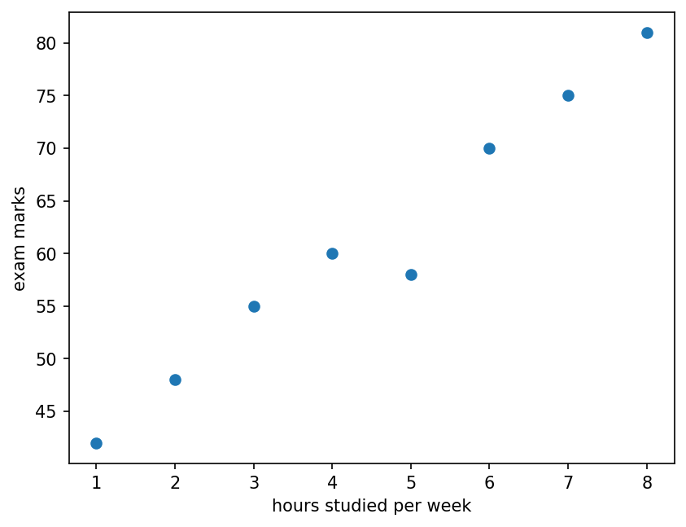
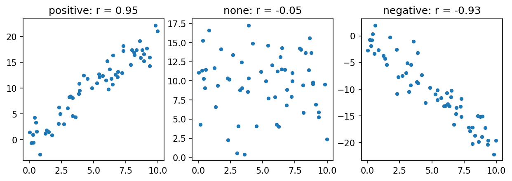
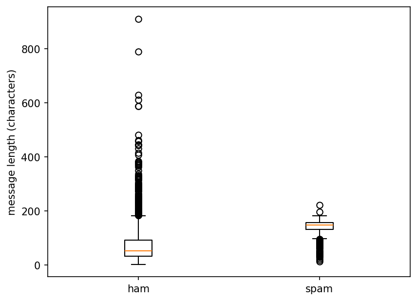

Charts and basic statistics: the foundation of machine learning
Introduction to Data Science and Machine Learning · Md Mahbub E Noor · University of Barishal
df["length"].hist() df["length"].describe()
mean() adds everything and divides by the countmedian() is the middle value after sortingimport pandas as pd marks = pd.Series([55, 62, 68, 70, 71, 74, 78, 99]) print(marks.mean()) print(marks.median()) marks2 = pd.Series([55, 62, 68, 70, 71, 74, 78, 300]) print(marks2.mean()) print(marks2.median())
72.125 70.5 97.25 70.5
Standard deviation measures how far values typically are from the mean. Fill each column, then add up the last one.
values = [2, 4, 4, 4, 5, 5, 7, 9] # mean = sum / count = 40 / 8 = 5 # variance = sum of squared gaps / count # = 32 / 8 = 4 # standard deviation = square root = 2
| value | value - mean | (value - mean)² |
|---|---|---|
| 2 | -3 | 9 |
| 4 | -1 | 1 |
| 4 | -1 | 1 |
| 4 | -1 | 1 |
| 5 | 0 | 0 |
| 5 | 0 | 0 |
| 7 | 2 | 4 |
| 9 | 4 | 16 |
| sum = 40 | sum = 32 |
Next row: arrow key or the ▶ button. Predict it first!
std() divides by count - 1, so 2.14, not 2values = pd.Series([2, 4, 4, 4, 5, 5, 7, 9]) print(values.std().round(2)) print(values.describe().round(2))
2.14 count 8.00 mean 5.00 std 2.14 min 2.00 25% 4.00 50% 4.50 75% 5.50 max 9.00 dtype: float64
A histogram groups values into bins and counts each bin. Spam and normal messages have very different length shapes.
import matplotlib.pyplot as plt
df = pd.read_csv("sms.tsv", sep="\t", header=None,
names=["label", "message"])
df["length"] = df["message"].str.len()
ham = df[df["label"] == "ham"]["length"]
spam = df[df["label"] == "spam"]["length"]
plt.hist(ham, bins=40, alpha=0.6, label="ham")
plt.hist(spam, bins=40, alpha=0.6, label="spam")
plt.xlabel("message length (characters)")
plt.ylabel("number of messages")
plt.legend()
plt.show()
WATCH FOR
Silent video: press play, pause any time.
Use a bar chart to compare counts of categories. Always label the axes.
counts = df["label"].value_counts()
plt.bar(counts.index, counts.values,
color=["tab:blue", "tab:orange"])
plt.ylabel("number of messages")
plt.title("Class imbalance in the SMS data")
plt.show()
Each dot is one student. The pattern shows how marks change with hours studied (a small invented example).
hours = [1, 2, 3, 4, 5, 6, 7, 8]
marks = [42, 48, 55, 60, 58, 70, 75, 81]
plt.scatter(hours, marks)
plt.xlabel("hours studied per week")
plt.ylabel("exam marks")
plt.show()
r = pd.Series(hours).corr(pd.Series(marks))
print(round(r, 3))0.983

Correlation r runs from -1 to +1. Close to +1: rise together. Close to -1: one rises as the other falls. Near 0: no straight-line pattern.
import numpy as np
rng = np.random.default_rng(0)
x = rng.uniform(0, 10, 60)
ys = {"positive": 2 * x + rng.normal(0, 2, 60),
"none": rng.normal(10, 4, 60),
"negative": -2 * x + rng.normal(0, 2, 60)}
fig, axes = plt.subplots(1, 3, figsize=(10, 3))
for ax, (name, y) in zip(axes, ys.items()):
r = np.corrcoef(x, y)[0, 1]
ax.scatter(x, y, s=12)
ax.set_title(f"{name}: r = {r:.2f}")
plt.show()
WATCH FOR
Silent video: press play, pause any time.
Both rise in hot weather. Ice cream does not cause drowning; heat drives both.
A correlation can come from something you did not measure. Ask: what else could explain it?
Models use correlations to predict. Prediction is useful, but it does not prove one thing causes another.
The box holds the middle 50% of values, the line is the median, and dots are unusual values (outliers).
plt.boxplot([ham, spam], labels=["ham", "spam"])
plt.ylabel("message length (characters)")
plt.show()
print(ham.median(), spam.median())52.0 149.0

pd.read_csvdescribe() for the hours columnst = pd.read_csv("students.csv")
print(st["hours"].describe())
plt.hist(st["attendance"], bins=15)
plt.show()
...Starter code: replace the ... with your own code
Read the last line of an error first. It names the problem.
| What you typed | What Python says | What it means |
|---|---|---|
plt.scatter([1, 2, 3], [4, 5]) | ValueError: x and y must be the same size | x and y must have the same number of values. |
print(df["label"].mean()) | TypeError: Cannot perform reduction 'mean' with string dtype | You cannot average text. Use value_counts() for categories. |
plt.hist(df["lenght"]) | KeyError: 'lenght' | Typo in the column name. Check df.columns. |
In the lab you can
Opens in a new tab and works offline. All labs: labs/START_HERE.html
s.mean(), s.median() | Two kinds of average |
s.std() | Typical distance from the mean |
s.describe() | Full numeric summary |
plt.hist(x, bins=) | Shape of one number column |
plt.bar(names, counts) | Compare categories |
plt.scatter(x, y) | Relationship of two columns |
a.corr(b) | Strength of a straight-line pattern |
plt.boxplot([a, b]) | Compare spread of groups |
Due before Lecture 8 · [date]
Compute the mean and standard deviation (divide by count) of 3, 5, 7, 9, 11 in a table like today's. Check with numpy: np.std(values).
Make a list of 7 prices, then replace the largest with a value 10 times bigger. Print mean and median before and after. Explain.
From students.csv: a histogram, a bar chart of dept counts, a scatter plot and a box plot of hours by passed. Label every axis.
Print st[["hours", "attendance", "prior_gpa"]].corr(). Which pair is most correlated?
Write one example of two things that are correlated but where one does not cause the other.
Watch it again at home to revise.